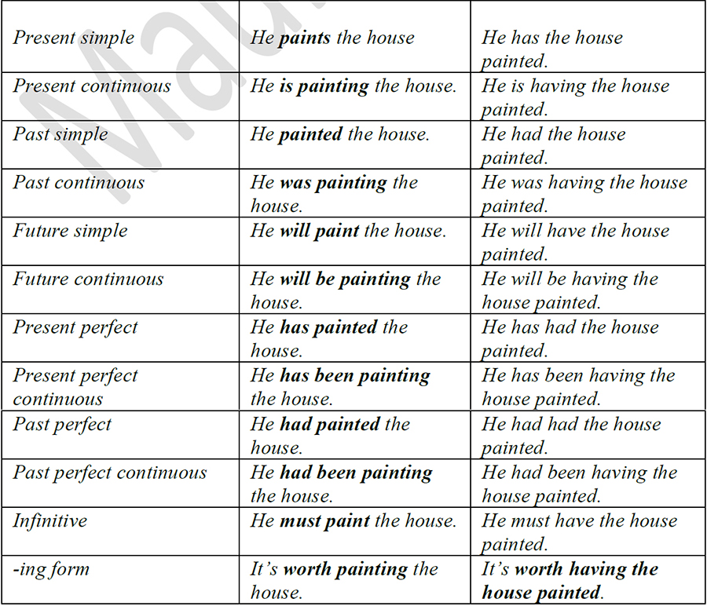

Have/Get something done
Have something Done and Get something done are both used to refer to actions which are done for the subject rather than by the subject. Causative verbs are used instead of passive verbs to show that
the subject causes the action to be done.
1. Have something done
I don´t know how to repair cars, so I´m having mine repaired at the garage round the corner.
2. Get something done
I really must get my eyes tested. I´m sure I need glasses.
Get your hair cut!
NOTE: The differences between have and get something done are that have is slightly more formal than get, and that get is more frequent than have in the imperative form.
[ We use the expression ‘to have something done
( have + object + past participle) to say: ]
• That somebody does something for you. Usually they’re things that are difficult to do yourself or you don’t want to do yourself.
• That something unpleasant happened to somebody.
[ Questions and negations of the verb have are formed with do/does or did. ]
[ We can use the verb get instead of the verb have only in informal conversation. ]
